The people behind the practice
Meet Our Team
Local guides who know these mountains by heart — here to help you slow down, breathe deep, and reconnect with nature.
Our story
Wellness rooted in Western North Carolina
Namaste in Nature was born from a simple belief: that the fastest way back to ourselves is through the natural world. We combine certified instruction with deep local knowledge to create experiences you can't find anywhere else.
Your guides
Meet your body-mind-spirit guides
Our guides are certified in CPR, First Aid & AED and have completed RYT® 200 Yoga Teacher Training — local instructors who know these mountains by heart.
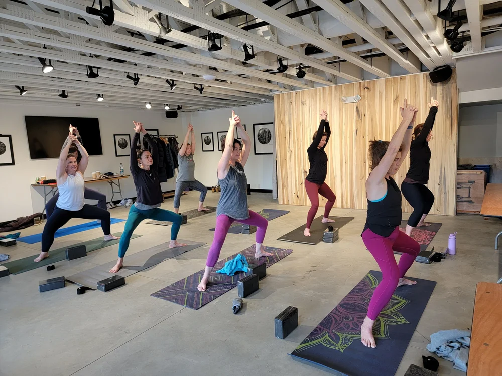
Ceiara Cartony
Owner · Yoga & Forest Bathing
Founder of Namaste in Nature and a hiking guide and yoga instructor. After a decade of practice she earned her 200-hour Hatha certification in 2014. Her classes emphasize mindful movement, stillness, and the Eight Limbs philosophy — and she finds nothing more enchanting than guiding yoga on mountaintops and beside waterfalls.
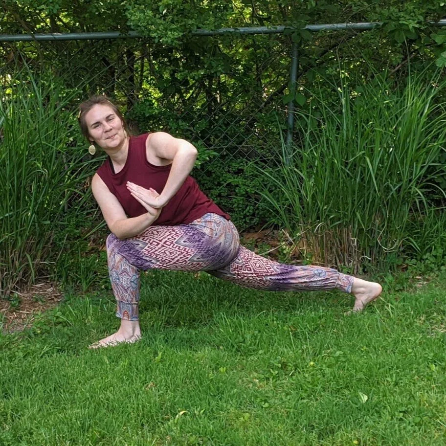
Brandon Hudson
Yoga & Hiking Guide
Brandon has hiked, taught, and practiced yoga around Asheville since 2000. RYT-500, RCYT, with an MAT in Special Education and Creative Relaxation training, her playful, gentle style helps children and adults of all abilities find their own connection to the practice.
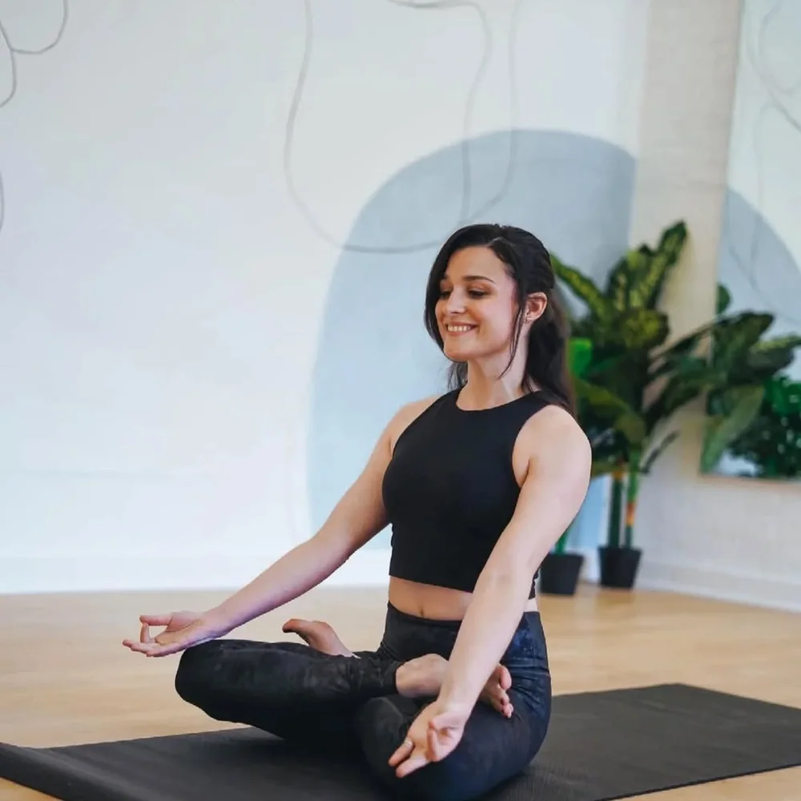
Jacqueline Comola
Yoga & Hiking Guide
Yoga has shown up at every major moment of Jacqueline's life. She earned her RYT-200 in Vinyasa in 2018 and has led hikes and educational trips since 2010. Her beginner-friendly classes pair breath with movement and a sense of whimsy and wonder.
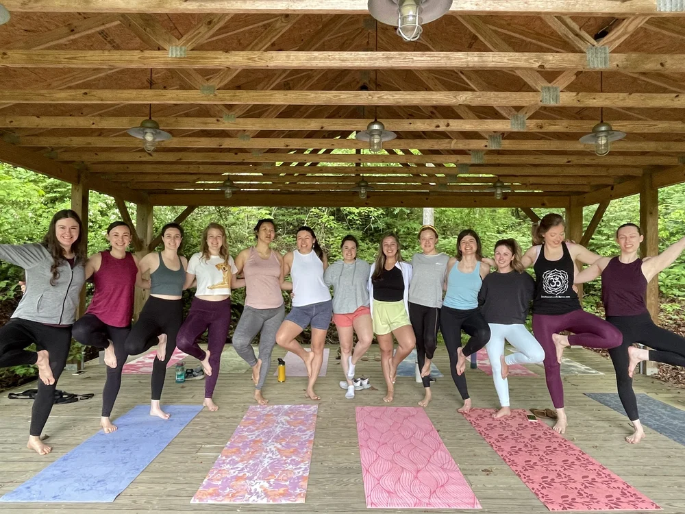
Nicole Killeen
Yoga & Hiking Guide
A student of yoga since 2006, Nicole completed 200-hour training in 2008 and 300-hour training in 2014. She weaves pranayama, dynamic flow, and relaxation into each class, drawing attention to the subtle sensations of body and breath.
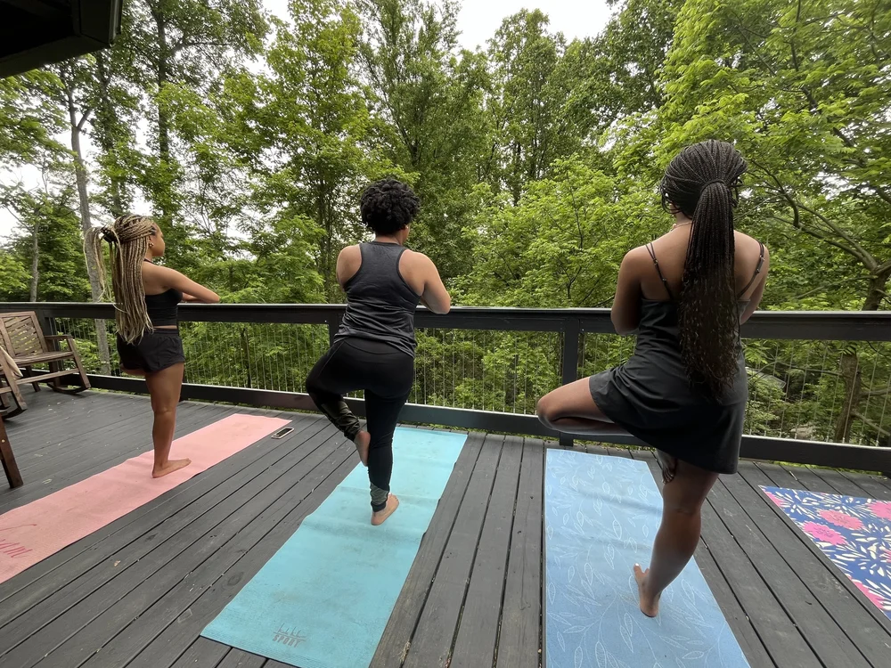
Kelli Hall
Yoga & Hiking Guide
With a background in the performing arts — touring as a dancer with Sesame Street Live — Kelli is also an educator and behavioral therapist. She leads guided hikes centered on mindfulness, compassion, and respect for the environment.
Anna Kate Stephenson
Yoga & Hiking Guide
A 250-hour RYT with 10 years of practice and specialized training in yin, breathwork, and chair yoga. Anna Kate blends asana, pranayama, and meditation to create a safe, peaceful, accessible space for all.
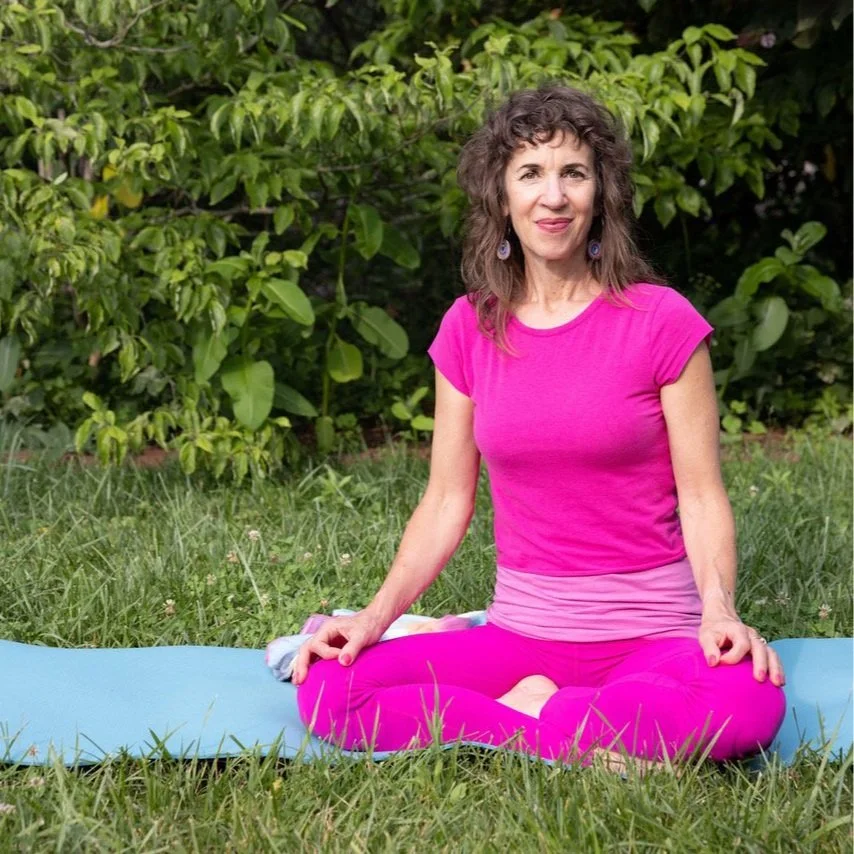
Lisa Murphy
Yoga & Hiking Guide
An RYT-200 with 30 years of experience, Lisa taught yoga across the Middle East, Asia, and Europe before settling in Asheville. A certified Life & Health Coach, she brings a balanced, light-hearted approach to helping others age healthfully.
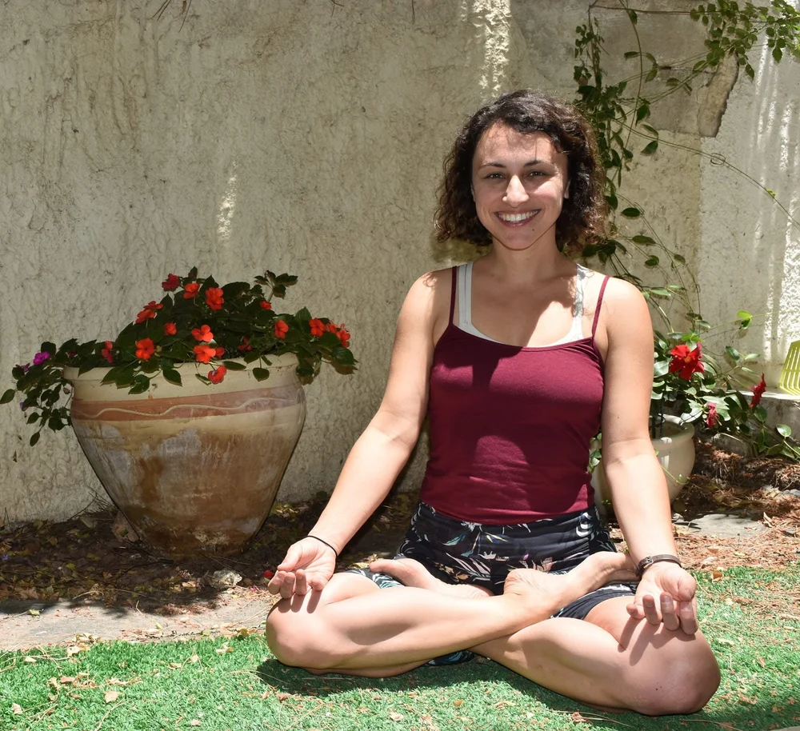
Rachel Pearlstein
Yoga & Hiking Guide
Rachel completed 500-hour Ashtanga-Vinyasa training plus Yin, Restorative, and trauma-informed trainings. A licensed clinical social worker, she brings somatic awareness and self-regulation to classes focused on strength, flexibility, and calm.
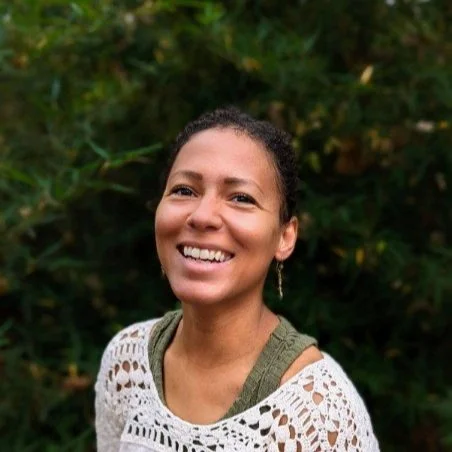
Rachel Holmes
Yoga, Hiking & Sound Healing
A lifelong dancer, artist, teacher, and healer, Rachel trained at Sonic Yoga in NYC with further study in Hatha, meditation, prenatal, and Kundalini yoga. She is also a sound healing practitioner, energy healer, and oracle.
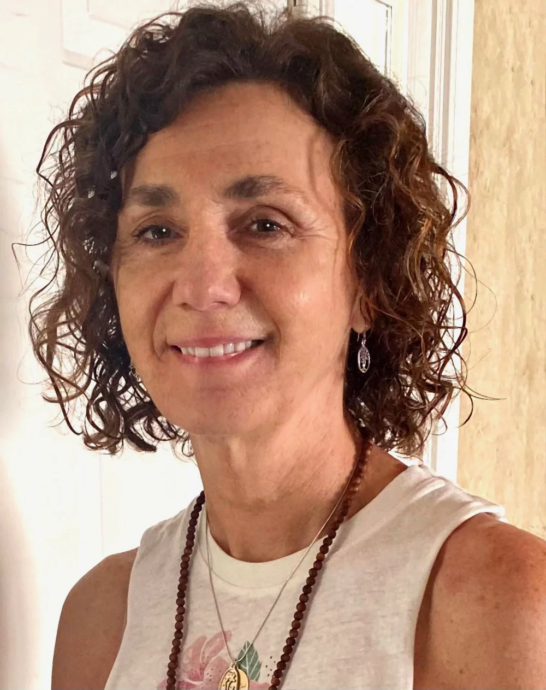
Tracey Lewis
Yoga & Hiking Guide
Tracey discovered yoga in her twenties and fell in love with the mind-body connection. Through relaxation and stillness she helps students hear their inner voice and connect more deeply with their own true nature.
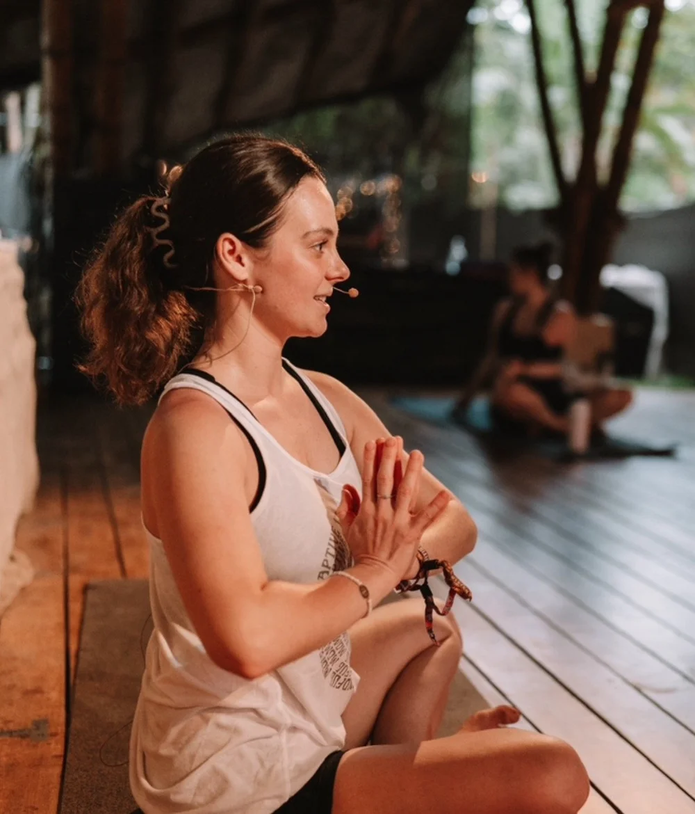
Sophie Schnitzlein
Yoga & Hiking Guide
A certified yoga educator (E-RYT, YACEP) with 500+ hours of training and a Wilderness First Responder. Sophie founded The Adaptive Yoga Resource, sharing yoga with people with disabilities, and believes nature and yoga are our greatest teachers.
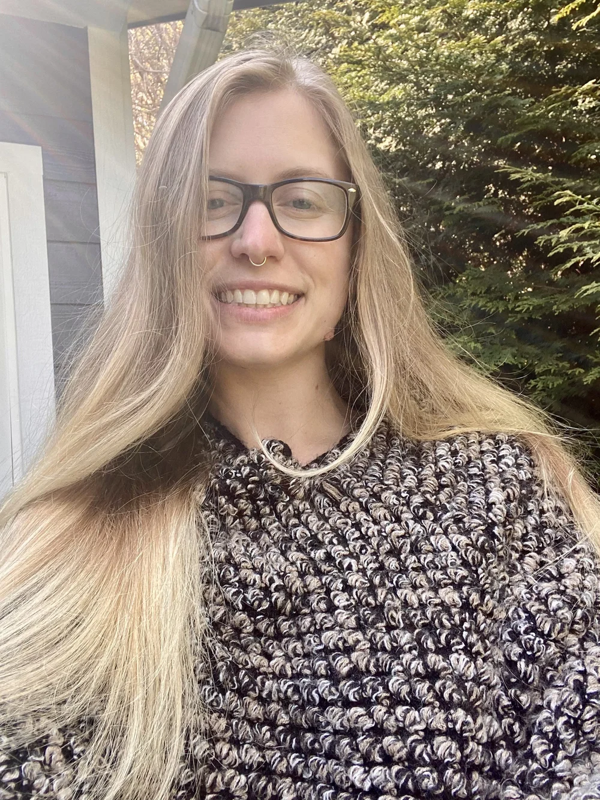
Rachel Lynes
Massage Therapist & Yoga Instructor
A second-generation massage therapist raised in the Blue Ridge, Rachel graduated from the Center for Massage in Asheville in 2025. She blends Swedish, deep tissue, trigger point, sports, and prenatal modalities, tailoring each session to the individual.
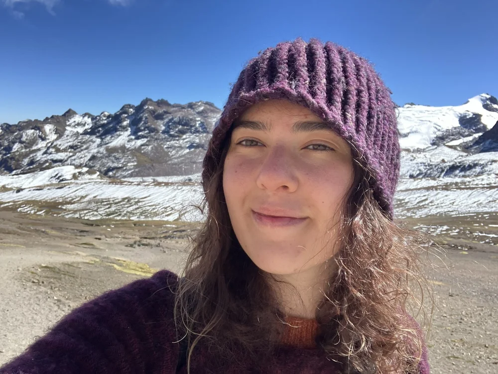
Alanna Shivone
Massage / Bodywork Therapist
Alanna blends deep, focused work with restorative relaxation, drawing on Swedish, deep tissue, myofascial, and neuromuscular techniques. A trained yoga instructor, she creates embodied sessions in a safe, supportive space.
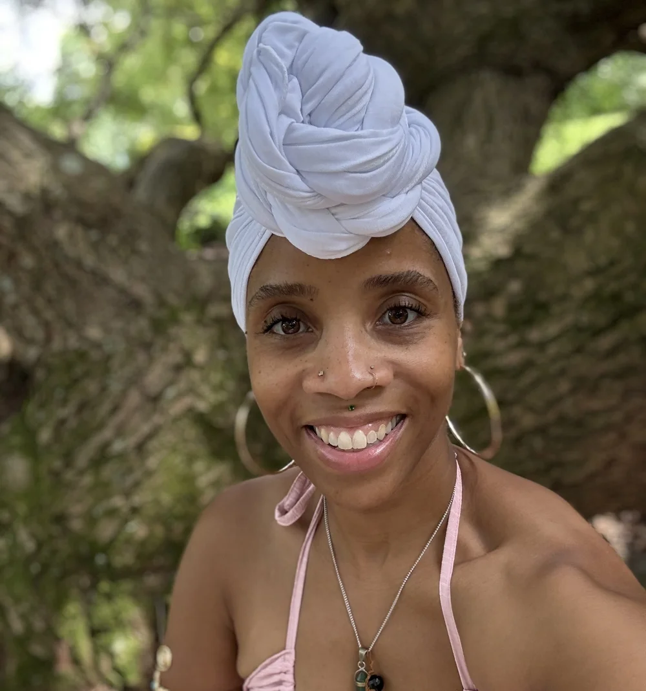
Latoya Salter
Sound Healer
Founder of Soulshine Roots and Resonance, Latoya is a certified sound healing and guided forest bathing practitioner. She weaves vibrational sound, nature connection, and nervous-system restoration into immersive, nurturing experiences.
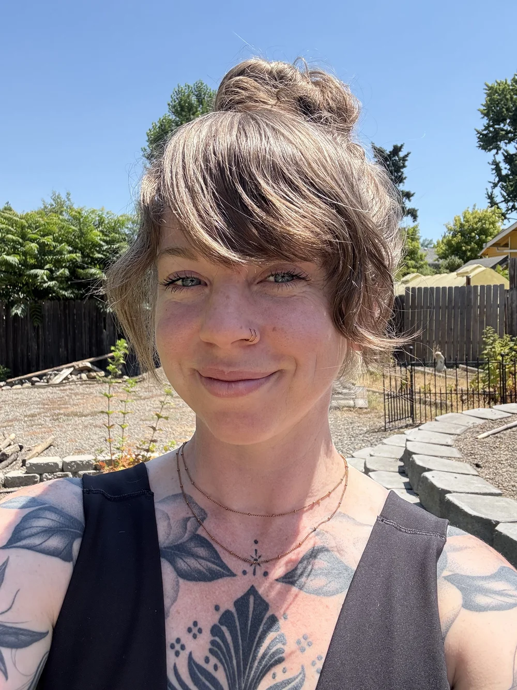
Matney Plyler
Yoga & Hiking Guide
A native North Carolinian recently returned to the Blue Ridge, Matney has practiced yoga for 10 years and taught since 2025. Her vinyasa-based style emphasizes finding softness in your strength, with mindfulness, fun, and curiosity.
Come practice with us
Book an experience and meet the team in the place we love most.
Stay connected
Sign up for news and updates
Seasonal offerings, trail notes, and the occasional dose of mountain inspiration — straight to your inbox.
We respect your inbox. Unsubscribe anytime.